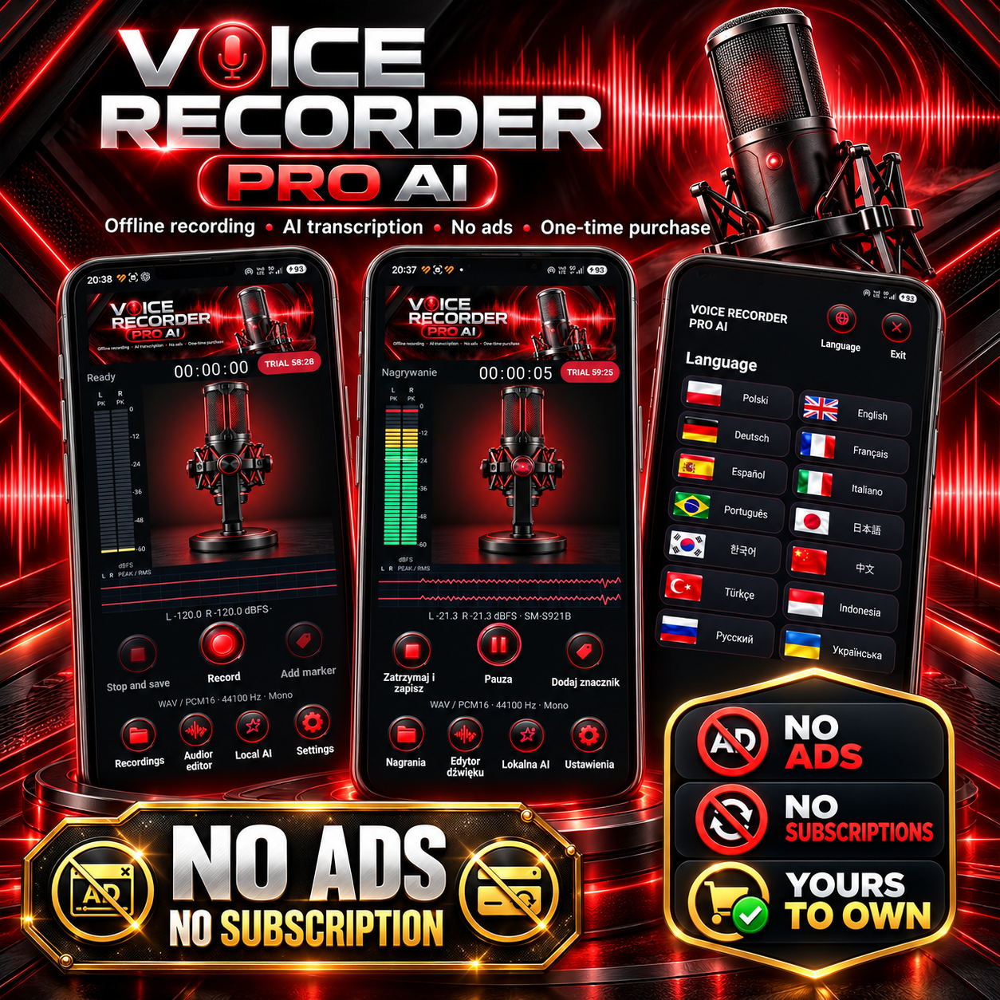
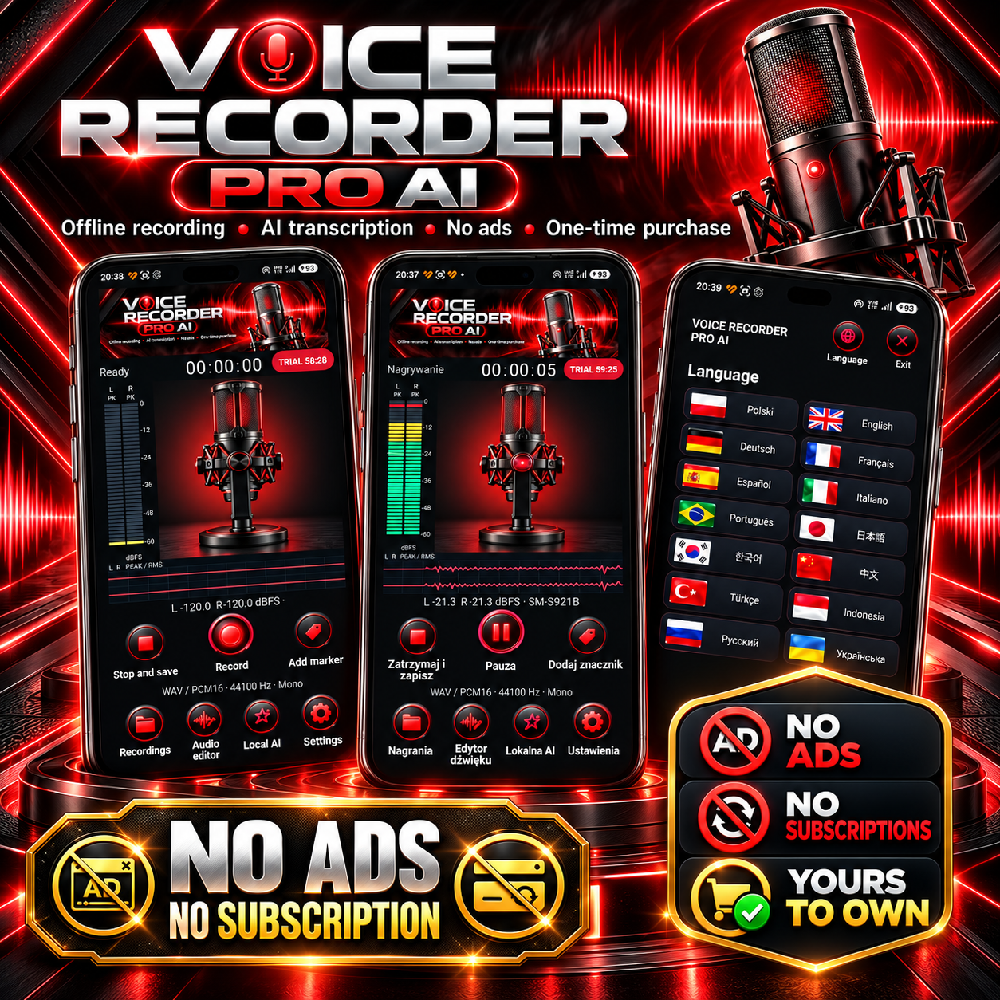
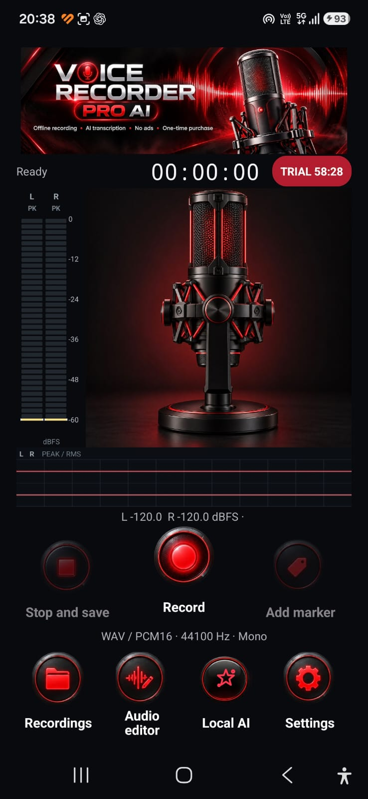
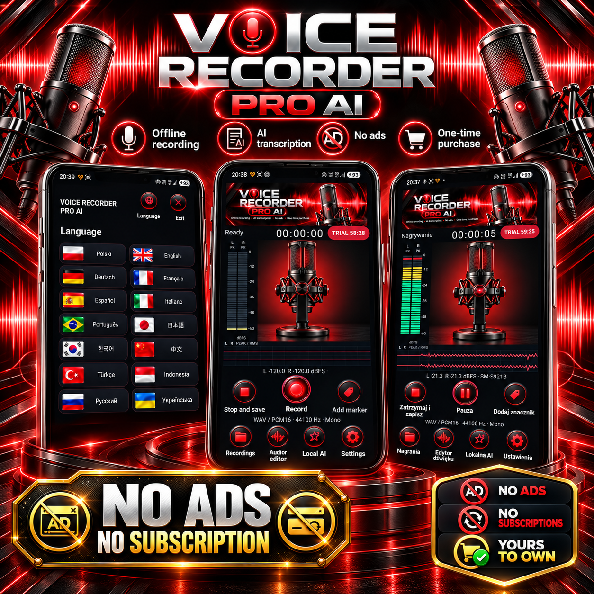
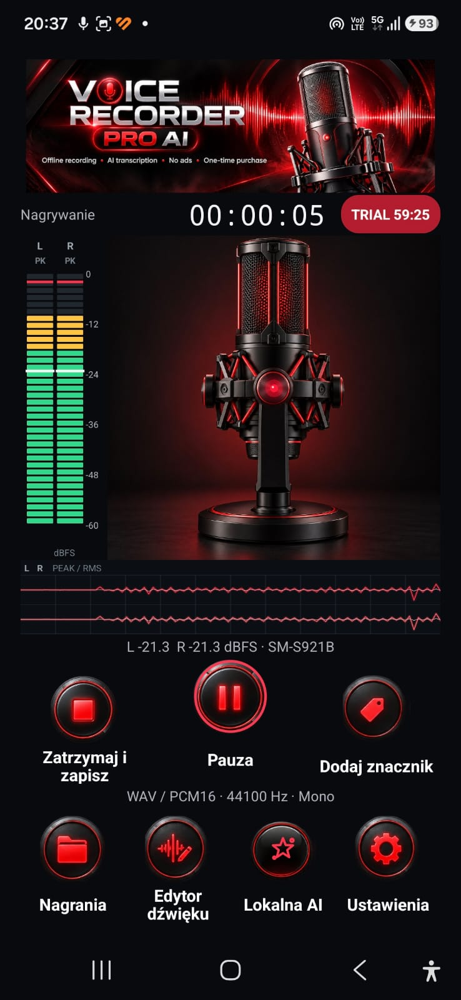
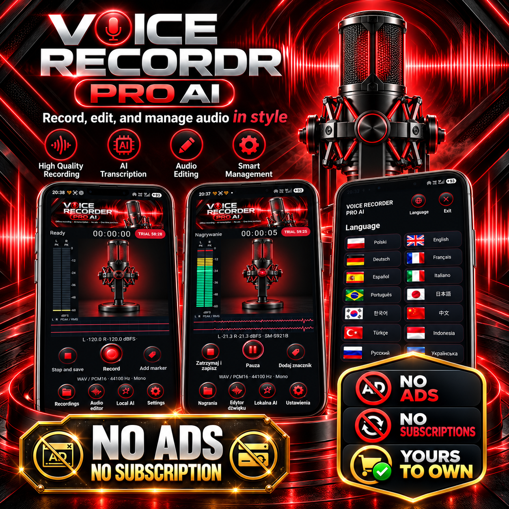

VOICE RECORDER PRO AI
Nagrywaj i organizuj nagrania dźwiękowe na Androidzie.
Dostępne wkrótce
Screenshots / Galeria






Nagrywaj i organizuj nagrania dźwiękowe na Androidzie.
Dostępne wkrótce





